木鶏の信念belief
『最幸』の鶏料理で、お客様に感動を。
素材、串打ち、焼き、
18年の経験を基に一切の妥協なく。
「木鶏」とは荘子に収められた故事に由来する言葉で 木彫りの鶏のように全く動じない闘鶏における最強の状態を指します。 そんな境地を目指しながらも、慢心することなく努力を忘れず より多くのお客様に料理の感動を提供し続けることを信念に 人としても店としても成長をし続けて参ります。

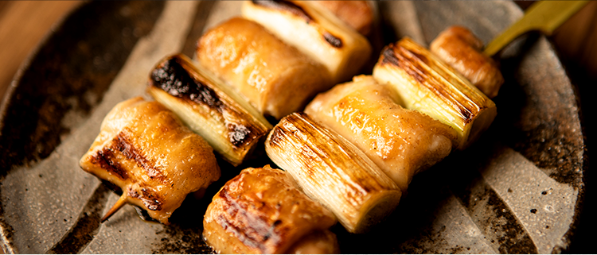
『最幸』の鶏料理で、お客様に感動を。
素材、串打ち、焼き、
18年の経験を基に一切の妥協なく。
「木鶏」とは荘子に収められた故事に由来する言葉で 木彫りの鶏のように全く動じない闘鶏における最強の状態を指します。 そんな境地を目指しながらも、慢心することなく努力を忘れず より多くのお客様に料理の感動を提供し続けることを信念に 人としても店としても成長をし続けて参ります。
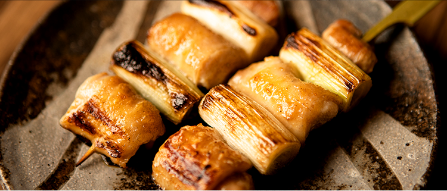
ingredients
炭職人仕上げの最高級 「紀州備長炭」
匠から匠へ。
千年以上受け継がれてきた紀州・和歌山県の炭職人の英知と技によって作られた備長炭。
その紀州備長炭は、焼師としての知識・技術・経験があり炭職人からの信頼がある者だけが扱える希少な素材です。
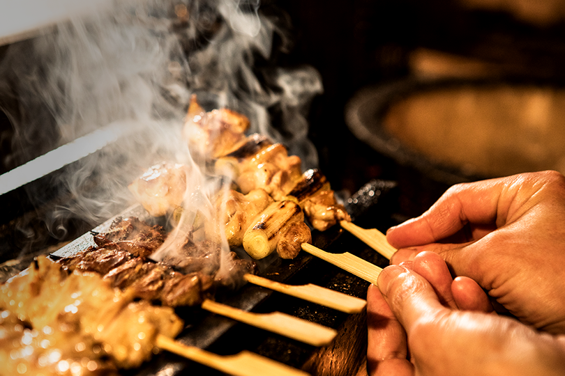


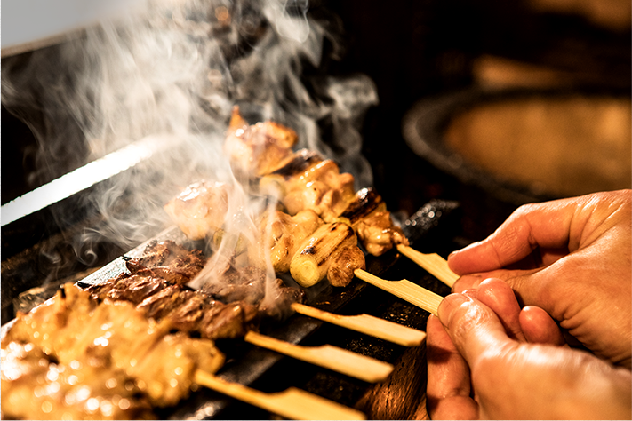
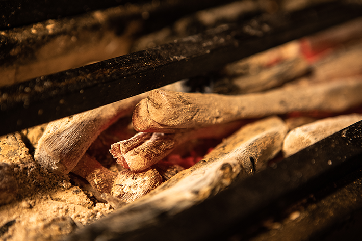
experience
鶏一筋18年
一串に込めた 焼き鶏への想い
紀州備長炭と呼吸を合わせて焼き上げた串からは、焼師18年の探求心と経験から生まれた技と紀州備長炭の香りを堪能出来ることができます。
最高ランクの備長炭で焼き上げた一串を是非ご堪能下さい。

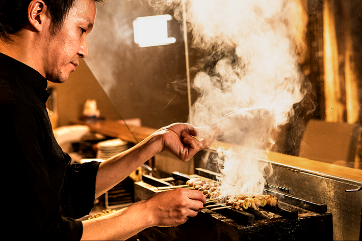
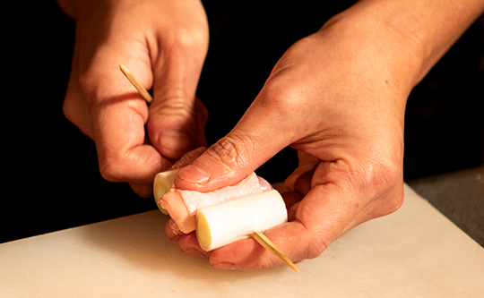

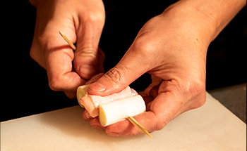
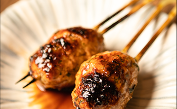
nabe
店主自らが炊く鶏ガラスープは野菜と鶏がぎっしりと溶け込んだ
濃厚でありがならもあっさりとした味わい。
焼師18年のこだわりもスープまで実感出来る作品です。
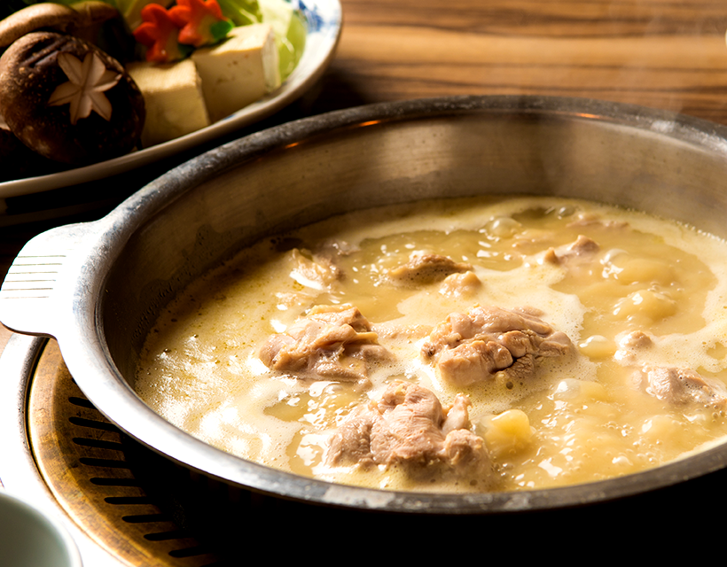
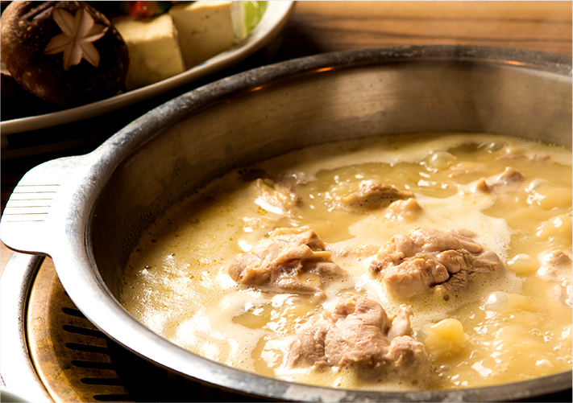
強い火力で4時間も炊いた濃厚なスープ。
自慢の鶏肉をさっぱりとした自家製のポン酢でお召し上がりください。
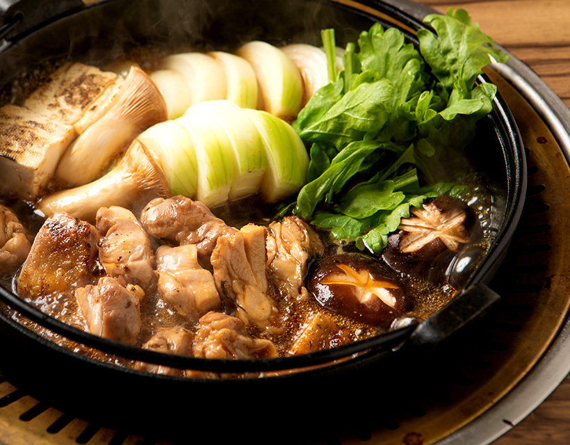
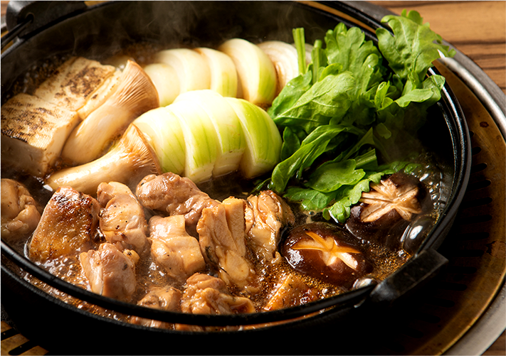
鶏肉と野菜にだしをしっかりと絡めて、濃厚な玉子で味わってお召し上がり下さい。
追加の〆には、残りの具材と汁で親子丼をご堪能ください。
space
店内は木を基調とした落ち着いた雰囲気。お寛ぎいただきながらお食事をお楽しみいただけます。落ち着いた隠れ家的空間でゆったりお食事、お酒を楽しみたい!といった方にオススメなお店。是非一度お立ち寄りくださいませ。
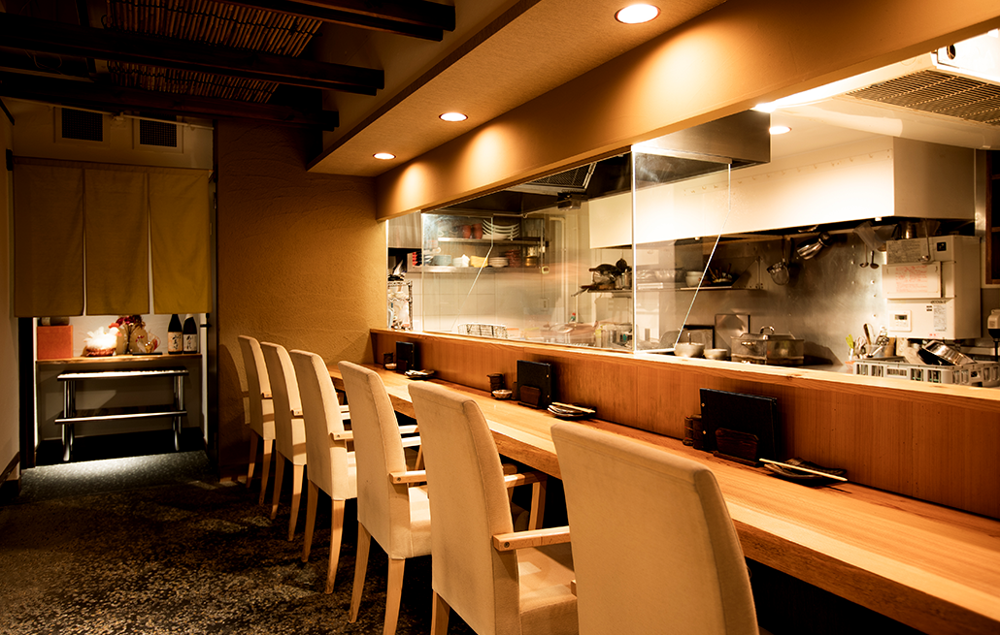
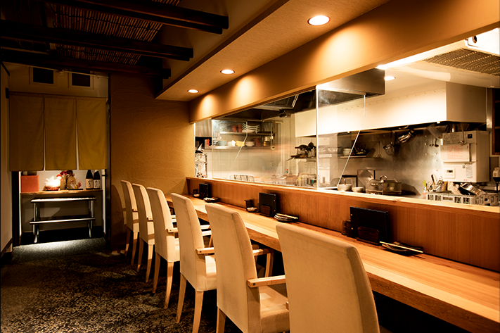
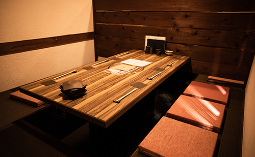
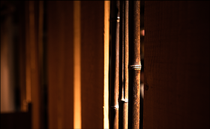
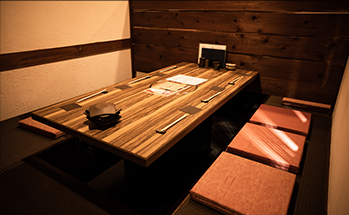
Location
大阪府大阪市中央区東心斎橋1-8-14
オーブナテビルB1
営業時間 : 月~土、祝日、祝前日: 翌0:00
料理、ドリンクL.O. 23:00
定休日 : 日曜日
TEL : 06-6227-8192
※営業中はお電話に出られない場合がございます。